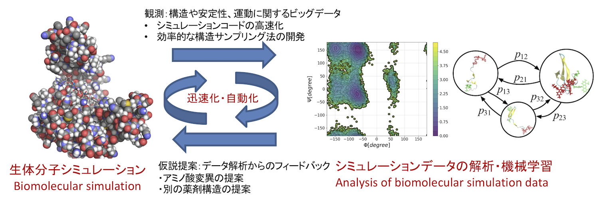

研究内容
生命現象の多くはタンパク質というヒモ状の分子が担っています。タンパク質は数十億年におよぶ進化の過程でデザインされた神秘的なふるまいを持つ一方で、多くの病気にも関与している重要な研究対象です。 タンパク質はとても複雑であり、数千から数十万個の原子からできています。このように複雑なものをどのようにして調べることができるでしょうか？ 私たちはこの問題に対し情報工学からアプローチしています。コンピュータの仮想空間の中でタンパク質を構築し、自然法則を真似て詳しく観察する手法(シミュレーション)を開発し応用する。 そしてそこから得られたビッグデータもコンピュータに理解させ(データサイエンス)、次の仮説を作り出しシミュレーションを行う。 このサイクルを迅速・自動的にまわすフレームワークとソフトウェアを開発することでタンパク質のふるまいを理解し制御する、具体的にはタンパク質機能を改善する合理的デザインや薬剤設計へ貢献することが目標です。

研究戦略の概念図
シミュレーションの効率化
分子シミュレーションは計算顕微鏡(computational microscope)とも呼ばれているように、 ミクロな世界のふるまいを観察する有力な手法のひとつです。 その意味で、分子シミュレーションの理論やアルゴリズムを開発することは、 顕微鏡の開発と同じく工学的な課題のひとつと言えます。
我々が取り組んでいるシミュレーション法のひとつである分子動力学法(molecular dynamics simulation)は、 中学校で習うニュートンの運動方程式(F=ma)を数値的に解く手法です。これは非常にシンプルで、 原子間距離を計算してそこから各原子に働く力を計算し、F=maに従って原子の座標を少し動かす、 それを何回も繰り返して原子・分子の運動を見る、ということをやっています。 たったこれだけことですが、そこからタンパク質がどうふるまうのかを詳しく調べることができます。 具体的には、どのような構造をとりえるのか？構造が変化しやすいか？どうやって構造変化するか? 薬剤がどれくらい結合しやすいか？薬剤結合エネルギーと構造との関係は?他のタンパク質と結合しやすいか？ といった多くの性質を調べることができます。
しかしながら分子動力学法には「遅い」という欠点があります。 たとえば、タンパク質が構造を変えて機能する時間スケールはおよそミリ秒(10^{-3}秒)ですが、 分子動力学シミュレーションの1ステップはフェムト秒(10^{-15}秒)です。 ミリ秒に到達するためには、10^{12}回のアップデート計算が必要ですが、 スーパーコンピュータを用いたとしてもむずかしいのが現状です。 また、薬剤が結合しやすいかを評価するのも、計算するのに1薬剤あたりおよそ1日かかってしまいます。 これでは数万個の薬剤候補を網羅的に評価することはむずかしいです。
我々はこの「遅い」という欠点を克服しようと研究しています。 計算を速くする方法のひとつは、シミュレーションのプログラムを並列化することです。 例えば、各原子を近いもの同士でグループに分けて、それぞれ別のコンピュータに保有させて 力の計算(原子間距離の計算)を行うことは有効な並列化のひとつです (原子が動くとグループ間の移動が必要なので一概に有効とは言えませんが)。 うまく並列化するとスーパーコンピュータ等の並列計算環境を活かして高速に計算することができるようになります。 このレベルの並列化には歴史があり、何年にも渡って開発・実装されてきているのが 共同研究先の理化学研究所のGENESIS、 ヨーロッパのGROMACS、 米国のAMBERやNAMD といった分子動力学法ソフトウェアです。
別の視点で、我々が最近特に取り組んでいることは、ひとつメタなレベルでの並列化です。 単純に言うと、一つのシミュレーションを長時間はしらせる代わりに、多数のシミュレーションを連携して流すことで 目的の計算(たとえばどのようなタンパク質構造が安定か、薬剤が結合しやすいかといった統計量)を短時間で計算できないか、 ということを研究しています。 例えば、構造の異なる独立なシミュレーションを並列にたくさんはしらせて、 マルコフ性の近似のもとで、機械学習を使ってデータを統合するといったアプローチがあります。 他には、ニュートンの運動方程式(F=ma)を時間方向に「並列化」して、 多数のシミュレーションを使って方程式の解を効率よく探索するというアプローチがあります(ストリング法と呼ばれます)。 我々は少し前にこのストリング法を駆使して、京コンピュータ上で薬剤耐性の原因となる巨大タンパク質の薬剤輸送過程をシミュレートしました (下の動画、詳しくはこちら)。 このメタなレベルの並列化は、シミュレーションデータの機械学習と組み合わせることでまだまだ効率化することができると考えています。 例えば、シミュレーションの途中で機械学習を行って、まだサンプリングが足りていない構造領域を推定し、 次のシミュレーションではその付近に集中的にシミュレーションをばらまく、 そしてそれを繰り返す、といったベイズ最適化などのアプローチが考えられます。 それを実現させるためのデータ解析法にも取り組んでいます(次へ続く)。
京コンピュータ上でシミュレートした巨大タンパク質AcrBの薬剤輸送過程
具体的な研究テーマ
- 分子動力学法ソフトウェアへの並列サンプリングの実装や高速化
- 効率よくシミュレーション資源を配分する方法の開発
- 実装した手法のトランスポーター・分子モーター系への応用
キーワード
- 高性能計算(High Peformance Computing; HPC)
- スーパーコンピュータ
- 並列化 MPI・OpenMP
- 低レベル言語 FORTRAN・C
- 確率密度関数のサンプリング
参考文献
-
松永康佑 "全原子分子動力学シミュレーションが解き明かす多剤排出トランスポーターAcrBの薬剤排出機構" 生物物理 59巻2号, 084-087 (2019) DOI:10.2142/biophys.59.084
-
Y. Matsunaga, T. Yamane, T. Terada, K. Moritsugu, H. Fujisaki, S. Murakami, M. Ikeguchi, and A. Kidera, "Energetics and conformational pathways of functional rotation in the multidrug transporter AcrB", eLife 7, e31715 (19 pages) (2018) (日本語による解説 「多剤排出トランスポーターの薬剤排出機構を解明 －スーパーコンピュータ「京」で巨大分子機械の動きを計算－」)
-
C. Kobayashi, J. Jung, Y. Matsunaga, T. Mori, T. Ando, K. Tamura, M. Kamiya, and Y. Sugita,"GENESIS 1.1: A hybrid-parallel molecular dynamics simulator with enhanced sampling algorithms on multiple computational platforms" Journal of Computational Chemistry 38, 2193-2206 (2017)
シミュレーションデータの解析
上で分子シミュレーションは「遅い」ことが欠点であると言いましたが、計算機やアルゴリズムの進歩とともに、この30年で10^{5}倍ほどの速度向上が実現されてきました。 生物物理という研究分野では、「タンパク質のフォールディング」という問題があります。 タンパク質はランダムな構造から自発的に決まった構造へ折れたたむ(フォールディング)することが知られていますが、 なぜ短時間のうちに他の無数にとりうる構造の中から唯一の構造を探すことができるのだろう？という問題です。 これを調べるには、タンパク質がフォールディングする過程をシミュレーションしてみるのがひとつの手段ですが、 一昔前はシミュレーションでタンパク質をフォールディングさせることは夢物語でした。
しかし、ここ数年ではスパコンや専用計算機・GPUを使えば、 小さなタンパク質をフォールディングさせることは当たり前になってきています。 例えば、下の動画は villin headpiece というタンパク質のフォールディングシミュレーションです。 正解構造である赤の実験データを重ねて描いていますが、それをシミュレーションだけでよく再現できていることがわかります。 一方でこの動画を見ると、こんな小さなタンパク質でもフォールディングする過程は非常に複雑で、もはや人間がこの動画からメカニズムを解釈することは不可能に思えます。 つまりシミュレーションはできるようになったけれど、その結果が複雑すぎて解釈できないという事態が生じています。 事実、最近の分子シミュレーション研究の分野では、 データ解析が得意な研究グループが、早い計算機を持つ研究グループが行った長時間のシミュレーションデータを提供してもらい、 データ解析だけ行ってその結果を報告する研究スタイルが確立しています。 シミュレーションの高速化に伴って、段々とシミュレーションからデータサイエンスのほうへ比重がシフトしつつあるのです。
Villin headpiece という小さなタンパク質がフォールディング(構造形成)する過程のシミュレーション。赤が実験で観測されている正解の最安定構造。
データ解析を行ってどのような情報を抽出できればよいでしょうか？ シミュレーションデータは、全ての原子についてのたくさんのXYZ座標が時間順に並んでいるデータ(多変量時系列データ)です。 大雑把にはこれを人間が理解したり少数の重要なアミノ酸を捉えることができるくらい低次元に縮約することが目標となります。 先ほどのタンパク質フォールディングの問題だと、 ランダムな構造から安定構造への進捗をよく記述できる低次元座標を探すことが目標となります。 これは例えば、途中で失敗せずにうまくフォールドしたデータと、 失敗してランダム構造へ戻ってしまったデータとを抜き出して、 それらを使って回帰や判別分析などを行うアプローチが考えられます。 しかし座標の組み合わせは無数にあるので低次元に縮約するのはチャレンジングな問題です。 現在我々はスパースモデリングを使う解析法に取り組んでいます。 下の動画は教員が昔にタンパク質の粗視化モデルのシミュレーションデータに対して素朴な主成分解析を行ってみた例です。
分子モーターやトランスポーター、一部の酵素では、 構造が大きく変化して移動・輸送やフィードバック制御といった「仕事」をします。 これは空間的に離れたアミノ酸が連携して動いたり、ローカルなイベントがグローバルな動きと 連携することで実現されており、総称してアロステリック制御と呼ばれています。 こうしたタンパク質のシミュレーションデータを解析する場合は、 相関を持って動いているアミノ酸を解析してアロステリック制御に関わるグループを特定した上で、 なぜ相関を持って動けるのかをエネルギーやネットワークの観点から解析するのが有効と考えられています。
また、ベーシックですが最重要な解析として、 シミュレーションで得られた各構造の熱力学的安定性・不安定性を 限られたデータ数から推定できるかという問題があります(自由エネルギー推定と呼ばれます)。 これは実験で観測される安定構造との対応をとるために不可欠であるばかりでなく、 構造がそれぞれ何％の割合で存在するのか？構造間のエネルギーバリアはどれくらい高くてその間の移動は起こり得るか？といった推定や、 薬剤やタンパク質間の結合しやすさを評価する上で大切です。 また、データ数が少ないことによる推定のエラーも同時に評価することで、 次のシミュレーションはどこを重点的に行なったらよいかの指針にもなります。 これに関して、現在我々はガウス過程を使う解析法に取り組んでいます。
最後に、シミュレーションデータからデータ解析によって、タンパク質の機能を改変する、 例えば熱力学的安定性を向上させるアミノ酸変異を提案できるかという課題があります。 これを行うにはデータベースに登録されている変異実験データと「統合」して推定するのが有効だと考えられます。 例えば、ProThermというデータベースには、 あるタンパク質のどのアミノ酸残基を変異させたらどれくらい安定・不安定になったか、というデータが登録されています。 これとシミュレーションデータから得られた安定構造やアミノ酸残基間の相互作用データを統合することになります。 こうした異なる種類のデータを統合してモデリングを行い、より正確な推定を行うための研究も行っています(次へ続く)。
タンパク質を粗視化したモデルのシミュレーション結果(左)と、主成分解析を行って大きく揺らぐモードだけを抽出したもの(右)
具体的な研究テーマ
- シミュレーションデータから構造の熱力学的安定性を推定する手法の開発(自由エネルギー推定)
- 自由エネルギー推定におけるエラーの評価
- シミュレーションデータを使ったアロステリック制御の解析法と応用
- シミュレーションデータから重要な座標(反応座標)を抽出する手法の開発と応用
キーワード
- 反応座標の探索(=構造変化に重要な座標の探索、回帰・判別分析、スパースモデリング)
- アロステリック制御の探索(=相関解析、協調的に動いている原子グループの探索)
- 自由エネルギー推定(=最尤法、ベイズ推定、ガウス過程)
- 高レベル言語 MATLAB・Julia・Python
参考文献
- Y. Matsunaga, Y. Komuro, C. Kobayashi, J. Jung, T. Mori, and Y. Sugita, “Dimensionality of Collective Variables for Describing Conformational Changes of a Multi-Domain Protein” The Journal of Physical Chemistry Letters 7, 1446–1451 (2016)
実験データを統合したモデリング
作成中
タンパク質の粗視化モデルの粒子フィルタシミュレーション
具体的な研究テーマ
- 種々の実験計測データを用いたデータ同化
- 実験計測データからのモデルパラメータ推定法
キーワード
- ベイズモデリング・データ同化
- 逐次モンテカルロ(粒子フィルタ)・隠れマルコフモデル
- 1分子計測・NMR・高速AFM
参考文献
- Y. Matsunaga, and Y. Sugita, “Linking time-series of single-molecule experiments with molecular dynamics simulations by machine learning”, eLife 7, e32668 (19 pages) (2018) (日本語による解説 「1分子計測のデータ同化による生体分子構造ダイナミクス －小タンパク質が折り畳まれる際の中間構造・パスウェイを特定－」)
その他
着手はできていないですが、上で説明している他に以下の萌芽的な研究テーマを検討しています。
- 実験データを使ったシミュレーションのモデルパラメータの修正 (キーワード：ベイズ推定、階層ベイズモデル)
- 過渡的に生成される動的な薬剤結合ポケット(cryptic binding sites)の探索 (キーワード：空洞cavityの探索、線形応答)
- 共進化情報を使った効率的なシミュレーション・サンプリング法の開発 (キーワード：データベース、進化情報)
- 人工タンパク質のフォールディング過程の解析 (キーワード：反応座標の探索とデザイン原理)